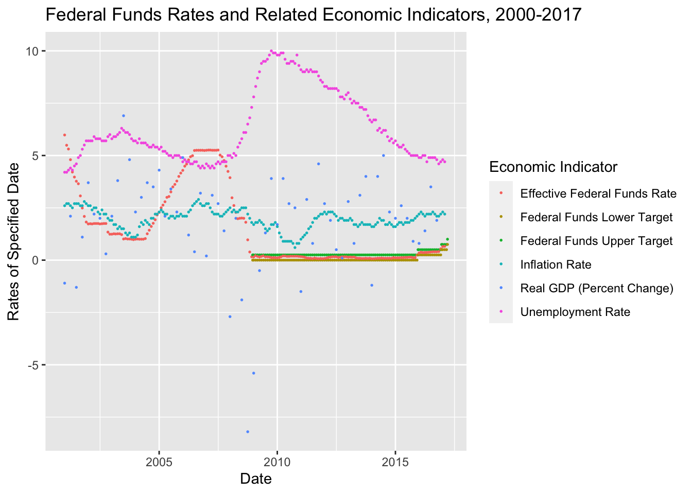

library(tidyverse)
library(dplyr)
library(lubridate)
library(ggplot2)
knitr::opts_chunk$set(echo = TRUE, warning=FALSE, message=FALSE)Challenge_6: Fed Funds Rate
challenge_6
fed_rate
Visualizing Time and Relationships of the Fed Funds Rate and Economic Indicators
Bringing in the Dataset as a Chart to Initially Review Its Content and Structure
We’ll look at the dataset, Fed Funds Rate, as we did in Challenge 4. As-is, the dataset has 894 lines and 10 columns.
ffr<-read_csv("_data/FedFundsRate.csv")
ffr# A tibble: 904 × 10
Year Month Day Federal F…¹ Feder…² Feder…³ Effec…⁴ Real …⁵ Unemp…⁶ Infla…⁷
<dbl> <dbl> <dbl> <dbl> <dbl> <dbl> <dbl> <dbl> <dbl> <dbl>
1 1954 7 1 NA NA NA 0.8 4.6 5.8 NA
2 1954 8 1 NA NA NA 1.22 NA 6 NA
3 1954 9 1 NA NA NA 1.06 NA 6.1 NA
4 1954 10 1 NA NA NA 0.85 8 5.7 NA
5 1954 11 1 NA NA NA 0.83 NA 5.3 NA
6 1954 12 1 NA NA NA 1.28 NA 5 NA
7 1955 1 1 NA NA NA 1.39 11.9 4.9 NA
8 1955 2 1 NA NA NA 1.29 NA 4.7 NA
9 1955 3 1 NA NA NA 1.35 NA 4.6 NA
10 1955 4 1 NA NA NA 1.43 6.7 4.7 NA
# … with 894 more rows, and abbreviated variable names
# ¹`Federal Funds Target Rate`, ²`Federal Funds Upper Target`,
# ³`Federal Funds Lower Target`, ⁴`Effective Federal Funds Rate`,
# ⁵`Real GDP (Percent Change)`, ⁶`Unemployment Rate`, ⁷`Inflation Rate`The dataset requires some steps to tidy it. Seven of the fed fund rates and economic indicator rates are listed in columms and must be moved to lines to ease use of this dataset for analysis and graphing. We use the function pivot_longer to move the seven columns to lines and add back a column for the corresponding rates of each line. We now have a dataset with 6,328 lines and 5 columns.
##Let’s Tidy the Data
ffrpl<-ffr %>% pivot_longer(
cols = "Federal Funds Target Rate":"Inflation Rate",
names_to = "Economic Indicator",
values_to = "Rates of Specified Date")
ffrpl# A tibble: 6,328 × 5
Year Month Day `Economic Indicator` `Rates of Specified Date`
<dbl> <dbl> <dbl> <chr> <dbl>
1 1954 7 1 Federal Funds Target Rate NA
2 1954 7 1 Federal Funds Upper Target NA
3 1954 7 1 Federal Funds Lower Target NA
4 1954 7 1 Effective Federal Funds Rate 0.8
5 1954 7 1 Real GDP (Percent Change) 4.6
6 1954 7 1 Unemployment Rate 5.8
7 1954 7 1 Inflation Rate NA
8 1954 8 1 Federal Funds Target Rate NA
9 1954 8 1 Federal Funds Upper Target NA
10 1954 8 1 Federal Funds Lower Target NA
# … with 6,318 more rowsThe dataset looks better, although the 3 columns for the date (year, month, day) won’t always be the most helpful way to look at the date or use the date for graphing. For these reasons, we’ll made a data column that combines the 3 columns into one column, and makes the datatype of the new combined column a ‘date’ datatype, whereas the 3 columns have dataype of
Mutate and lubridate are the functions used to combine the 3 columns into one for the date. The date has a format of yyyy-mm-dd.
##Make a Combined Date Column to Ease Reading the Date in the Chart
ffrpl_dates<-ffrpl%>%
mutate(date = str_c(Year, Month, Day, sep="-"),
date = ymd(date))
ffrpl_dates# A tibble: 6,328 × 6
Year Month Day `Economic Indicator` Rates of Specifie…¹ date
<dbl> <dbl> <dbl> <chr> <dbl> <date>
1 1954 7 1 Federal Funds Target Rate NA 1954-07-01
2 1954 7 1 Federal Funds Upper Target NA 1954-07-01
3 1954 7 1 Federal Funds Lower Target NA 1954-07-01
4 1954 7 1 Effective Federal Funds Rate 0.8 1954-07-01
5 1954 7 1 Real GDP (Percent Change) 4.6 1954-07-01
6 1954 7 1 Unemployment Rate 5.8 1954-07-01
7 1954 7 1 Inflation Rate NA 1954-07-01
8 1954 8 1 Federal Funds Target Rate NA 1954-08-01
9 1954 8 1 Federal Funds Upper Target NA 1954-08-01
10 1954 8 1 Federal Funds Lower Target NA 1954-08-01
# … with 6,318 more rows, and abbreviated variable name
# ¹`Rates of Specified Date`The Month/Day/Year column appears on the right side of the dataframe as expected. It has a
Graphing with Fed Funds Rate Dataset:
Time-Dependent Visualization…Graphing Data By Occurrence in Time
The data set has 4 different federal fund rates and 3 different economic indicators that were moved from columns to rows through pivot_longer function. Let’s see what those rates and indicators look like on a graph across the time period respective of the occurrence of each rate/indicator.
ffrpl_dates%>%
filter(`Economic Indicator`== "Effective Federal Funds Rate" | `Economic Indicator`== "Federal Funds Target Rate" |`Economic Indicator`== "Federal Funds Upper Target" |`Economic Indicator`== "Federal Funds Lower Target" |`Economic Indicator`== "Real GDP (Percent Change)" |`Economic Indicator`=="Real GDP (Percent Change)"| `Economic Indicator`== "Unemployment Rate" | `Economic Indicator`=="Inflation Rate") %>%
ggplot(aes (x=date,y=`Rates of Specified Date`, color=`Economic Indicator`))+
geom_point(size=.3)+
labs(title = "Federal Funds Rates and Related Economic Indicators, 1954-2017", y = "Rates of Specified Date", x = "Date")
The data set covers 1954 through 2017, with some rates and indicators being reported more often than others, and some rates/ indicators beginning later than others. In other words, not every rate/indicator was reported beginning in 1954, or on the same time period basis through 2017. For example, the Effective Fed Funds Rate was reported monthly for all years 1954 - 2017, while other rates and indicators were reported quarterly, or some were reported somewhat irregularly. We see the key of the various rates and indicators are assigned specific colors and graphed in a scatterplot graph, across the time frame 1954 through 2017.
Although the graph is rather busy, we can see a few things as it is currently depicted: The Effective Federal Funds Rate (orange) and Inflation Rate (blue) had its highest peaks surrounding the year 1980. We see some scatterplot dots have formed lines because of the frequency of the rate/indicator being reported. For example, the olive green line is the Federal Funds Target Rate, which seems to have began sometime in the early 1980s. Real GDP (Percent Change) doesn’t really follow a line, and is more erratic than any other rate or indicator. Later in the 2000s as the graph nears 2010, two new lines begin that hover near 0, with no change to their value for over 5 years. These appear to be the Federal Funds Lower Target and the Federal Upper Target Rate.
Why do these rates and indicators have the behavior we see in the graph?
We can make some assumptions based on global economic events related to the dates of changes in the rates/indicators.
We know the years immediately before and after 1980 were years of high inflation and high fuel prices. That explains the Effective Federal Funds Rate and Inflation Rate peaks around 1980.
We know the mortgage backed security crisis around 2008 caused the peaks in certain rates/indicators around and following 2008.
We can reasonably assume the Federal Funds Lower Target and the Federal Funds Upper Target came into being after 2008 to take the place of the Federal Funds Target Rate, in order to put guardrails on the rates and use these rates as tools to better monitor the Federal Funds Rate.
We see the unemployment rate lagged after the 2008 crisis, in response to the financial markets suffering significant losses from the 2008 mortgage backed security crisis. Businesses could no longer get credit as cheaply or securely as prior to 2008, leading to employment layoffs.
Let’s focus in on some of the rates and indicators to better view the specifics of shorter time periods. We’ll use filter to view specific rates and indicators, and limit the time period by year.
To make this graphical representation of the data more meaningful, let’s look at a smaller timeframe - after 1975, and look at the 2 Federal Funds Rates that existed prior to 2008, and the Inflation Rate, Real GDP and Unemployment Rate:
ffrpl_dates%>%
filter(`Economic Indicator`== "Effective Federal Funds Rate" | `Economic Indicator`== "Federal Funds Target Rate" |`Economic Indicator`== "Real GDP (Percent Change)" |`Economic Indicator`=="Real GDP (Percent Change)"| `Economic Indicator`== "Unemployment Rate" | `Economic Indicator`=="Inflation Rate", Year>1995) %>%
ggplot(aes (x=date,y=`Rates of Specified Date`, color=`Economic Indicator`))+
geom_point(size=.5)+
labs(title = "Federal Funds Rates and Related Economic Indicators, 1995-2017", y = "Rates of Specified Date", x = "Date")
This graph is becoming more meaningful. Breaking this graph down to smaller timeframes would be helpful, which can be done another time.
For now, let’s zero in on the 2008 financial crisis. To really understand this, we need to look at years prior to 2008 and after. Let’s look at the rates and indicators after the year 2000 and include the two new Federal Funds Upper and Lower Target Rates, along with other rates and indicators.
ffrpl_dates%>%filter(`Economic Indicator`== "Effective Federal Funds Rate" |`Economic Indicator`== "Federal Funds Upper Target" |`Economic Indicator`== "Federal Funds Lower Target" | `Economic Indicator`== "Real GDP (Percent Change)" |`Economic Indicator`=="Real GDP (Percent Change)"| `Economic Indicator`== "Unemployment Rate" | `Economic Indicator`=="Inflation Rate", Year>2000) %>%
ggplot(aes (x=date,y=`Rates of Specified Date`, color=`Economic Indicator`))+
geom_point(size=.3)+
labs(title = "Federal Funds Rates and Related Economic Indicators, 2000-2017", y = "Rates of Specified Date", x = "Date")
We see the Effective Federal Funds Rate and the Unemployment Rate taking dramatic changes at/after 2008, as we know occurred. We see the controls of the Federal financial system took effect and are shown by the Effective Federal Funds Rate being within the guardrails of the Federal Funds Lower Target and the Federal Funds Upper Target after 2008, and remains so through the conclusion of the data set in 2017, so we can reasonably assume those target guardrails remain in effect going forward from 2017.
We see Real GDP (Percent Change) had its lowest occurrences around 2008, and necessitates the negative graph space, as other rates/indicators do not go below 0. Real GDP (Percent Change) begins to exist mostly above 0 and is less erratic after the year 2010.
Let’s look at each of these rates/indicators in their individual graph, but side-by-side.
Comparing the Different Federal Funds Rates and Economic Indicators of the Dataset Using the facet_wrap function of ggplot
ffrpl_dates%>%filter(`Economic Indicator`== "Effective Federal Funds Rate" | `Economic Indicator`== "Federal Funds Upper Target" |`Economic Indicator`== "Federal Funds Lower Target" |`Economic Indicator`== "Real GDP (Percent Change)" |`Economic Indicator`=="Real GDP (Percent Change)"| `Economic Indicator`== "Unemployment Rate" | `Economic Indicator`=="Inflation Rate", Year>2005) %>%
ggplot(aes (x=date,y=`Rates of Specified Date`))+
geom_point(size=0)+
labs(title = "Federal Funds Rates and Related Economic Indicators, 2005-2017", y = "Rates of Specified Date", x = "Date")+
facet_wrap(vars(`Economic Indicator`))
Although comparing the various rates and indicators within one graph with colors is helpful and provides a perspective, looking at each rate or indicator in its own graph simplifies the view of the behavior of the individual rate/indicator while keeping the time metric consistent among them all.
Let’s do the same graphs for year 2000 forward for a little more prespective.
ffrpl_dates%>%filter(`Economic Indicator`== "Effective Federal Funds Rate" |`Economic Indicator`== "Federal Funds Upper Target" |`Economic Indicator`== "Federal Funds Lower Target" | `Economic Indicator`== "Real GDP (Percent Change)" |`Economic Indicator`=="Real GDP (Percent Change)"| `Economic Indicator`== "Unemployment Rate" | `Economic Indicator`=="Inflation Rate", Year>2000) %>%
ggplot(aes (x=date,y=`Rates of Specified Date`))+
geom_point(size=.4)+
labs(title = "Federal Funds Rates and Related Economic Indicators, 2000-2017", y = "Rates of Specified Date", x = "Date")+
facet_wrap(vars(`Economic Indicator`))
We are reminded again the the Lower and Upper Target Rates began shortly after 2008. We see the variation in the Effective Federal Funds Rate leading up to 2008. Does this tell us the Effective Federal Funds Rate is significantly influential to our economy? It is not solely significantly influential, but it does indicate some potential predictors of the financial crisis. The 2008 Financial Crisis is far too complex to explain here, yet we are seeing influences in the behavior of the rates and indicators, and how those economic influences respond to changes among the others as well as other impacts in the global markets.
What other ways might we want to use individual graphs of the rates and economic indicators to better understand what happened to the financial systems? Perhaps zeroing in on the tiny variations of the Federal Funds Lower Target and Upper Target might be useful in relation to other indicators we don’t have in this dataset, but could obtain for comparison purposes. Tiny changes to the Federal Rate has enormous impacts to our economy, as we have seen since March 2020 in our mortage rate and home buying market.
Let’s look at the full data set on a graph again before we add a layer….
ffrpl_dates%>%filter(`Economic Indicator`== "Effective Federal Funds Rate" |`Economic Indicator`== "Federal Funds Upper Target" |`Economic Indicator`== "Federal Funds Lower Target" | `Economic Indicator`== "Real GDP (Percent Change)" |`Economic Indicator`=="Real GDP (Percent Change)"| `Economic Indicator`== "Unemployment Rate" | `Economic Indicator`=="Inflation Rate", Year<2012) %>%
ggplot(aes (x=date,y=`Rates of Specified Date`, color=`Economic Indicator`))+
geom_point(size=.3)+
labs(title = "Federal Funds Rates and Related Economic Indicators, 1954-2017", y = "Rates of Specified Date", x = "Date")
Let’s smooth some of the rates/indicators in the enxt graph by adding the smooth function in ggplot.
Let’s also look at the years before 2012, given the crisis in 2008, and the high inflation around the year 1980.
#Smoothing the Graph Contents and Limiting the Graph Period to prior to the year 2012
ffrpl_dates%>%
filter(`Economic Indicator`== "Effective Federal Funds Rate" |`Economic Indicator`== "Federal Funds Upper Target" |`Economic Indicator`== "Federal Funds Lower Target" | `Economic Indicator`== "Real GDP (Percent Change)" |`Economic Indicator`=="Real GDP (Percent Change)"| `Economic Indicator`== "Unemployment Rate" | `Economic Indicator`=="Inflation Rate", Year<2012) %>%
ggplot(aes (x=date,y=`Rates of Specified Date`, color=`Economic Indicator`))+
geom_point(size=.3)+
geom_smooth()+
labs(title = "Federal Funds Rates and Related Economic Indicators, 1954-2012", y = "Rates of Specified Date", x = "Date")
The smoothing helps us see some generalizations of the rates/indicators. We can see, more easily, the behavior and changes of the rates/indicators.
#Smoothing the Graph Contents and Limiting the Graph Period to the years 1965 to 2012
ffrpl_dates%>%
filter(`Economic Indicator`== "Effective Federal Funds Rate" |`Economic Indicator`== "Federal Funds Upper Target" |`Economic Indicator`== "Federal Funds Lower Target" | `Economic Indicator`== "Real GDP (Percent Change)" |`Economic Indicator`=="Real GDP (Percent Change)"| `Economic Indicator`== "Unemployment Rate" | `Economic Indicator`=="Inflation Rate", Year>1965, Year<2012) %>%
ggplot(aes (x=date,y=`Rates of Specified Date`, color=`Economic Indicator`))+
geom_point(size=.3)+
geom_smooth()+
labs(title = "Federal Funds Rates and Related Economic Indicators, 1965-2012", y = "Rates of Specified Date", x = "Date")
We now have a graph that includes a tighter timeframe that includes the years of greater economic instability to examine in more detail.
#CONCLUSION
ggplot has many aesthetics and graphing capabilities to allow us to create visualizations that are more focused, and more intuitive to view.